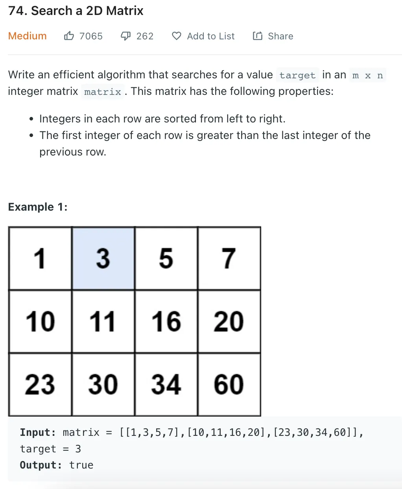
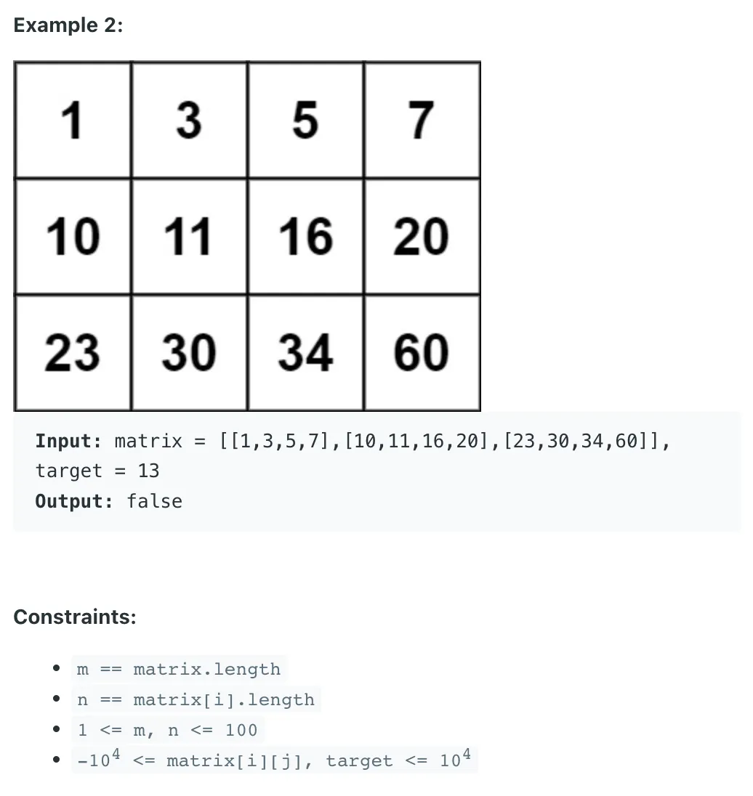

74. Search a 2D Matrix
考過的公司：Bytedance
Question


✍🏽 My Solution
Runtime: 0 ms, faster than 100.00% of Java online submissions for Search a 2D Matrix. Memory Usage: 43 MB, less than 35.54% of Java online submissions for Search a 2D Matrix.
// 0,0 0,1 0,2 0,3
// 1,0 1,1 1,2 1,3
// 2,0 2,1 2,2 2,3
// 3,0 3,1 3,2 3,3
// 4,0 4,1 4,2 4,3
// 0 1 2 3
// 4 5 6 7
// 8 9 10 11
// 12 13 14 15
// 16 17 18 19
class Solution {
public boolean searchMatrix(int[][] matrix, int target) {
int m = matrix.length;
int n = matrix[0].length;
int len = m*n;
int low = 0;
int high = len-1;
while (low <= high) {
int mid = low+(high-low)/2;
if (matrix[mid/n][mid%n] == target) {
return true;
} else if (matrix[mid/n][mid%n] > target) {
high = mid - 1;
} else {
low = mid + 1;
}
}
return false;
}
}
🧠 Thought Process
- Why did I choose this particular implementation?
- 因為是有序的二維，所以可以用二分查找
- 很開心 第一次有medium的題目是我自己想出來的思路！
- n * m matrix convert to an array => matrix[x][y] => a[x * m + y]
- an array convert to n * m matrix => a[x] =>matrix[x / m][x % m];
- What is the time/space complexity of my solution? How do I know?
- time: O(logn)
- space: O(1)
- What mistakes did I make?
- 一開始多建立一個tmp的matrix，手動debug發現根本不需要這個tmp
- 改回matrix[][]就成功了!!!
- What can I do next time to make sure I don't make the same mistakes again?
- 之前自己想出來的思路整個忘了….